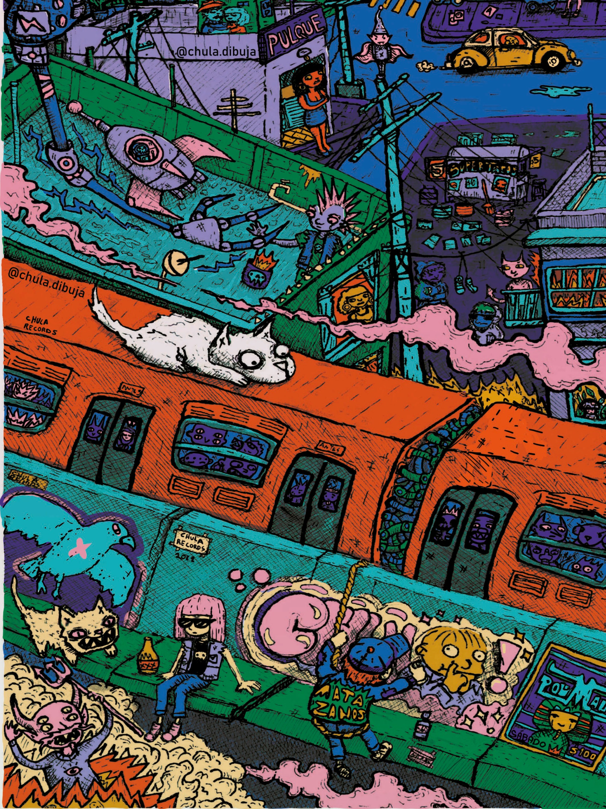
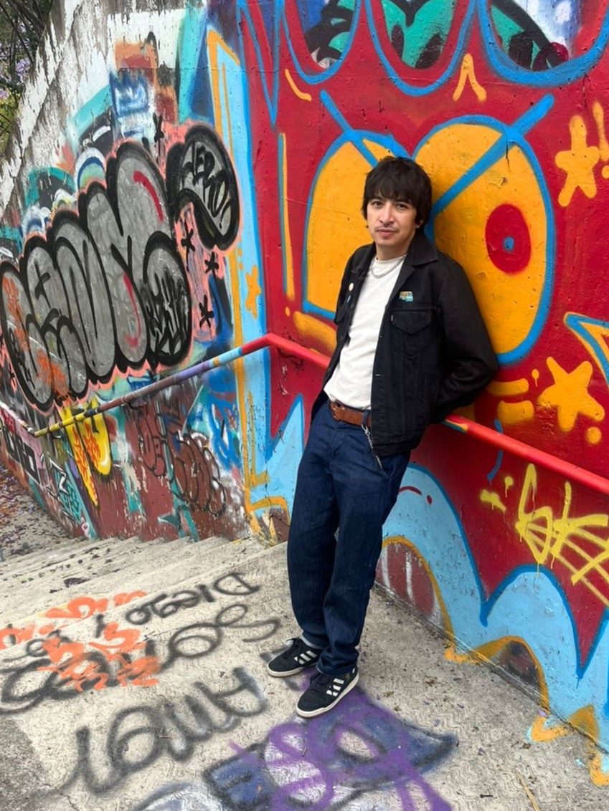
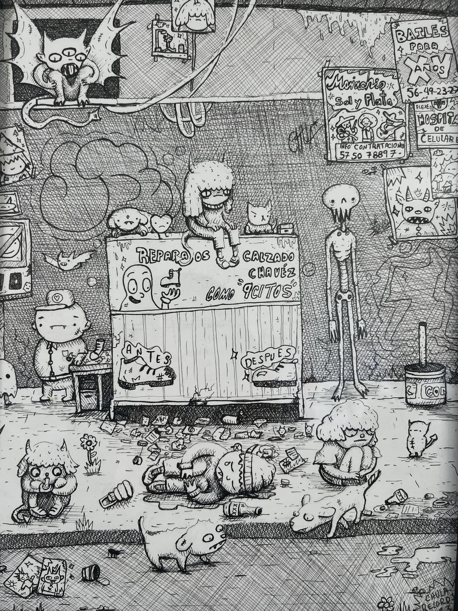
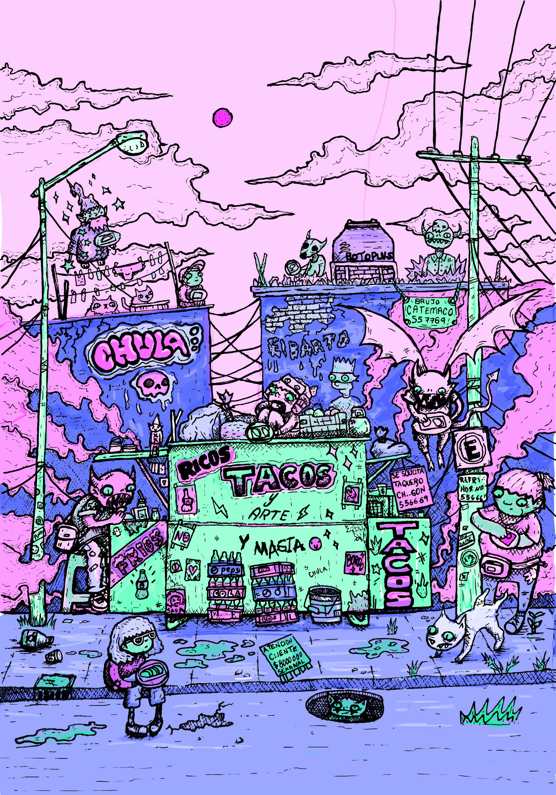
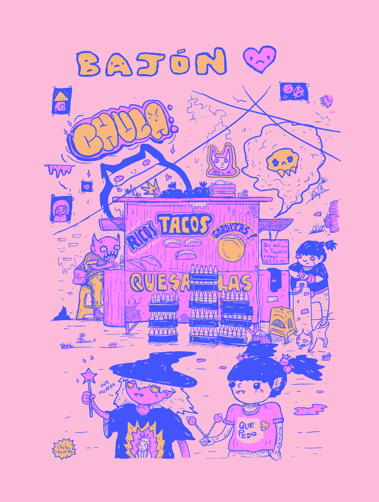

Siempre me ha gustado dibujar
Desde que tengo memoria, mi motor ha sido la curiosidad por diferentes medios, formas y temas. Estudiar Artes Visuales en la Facultad de Artes y Diseño (UNAM) me dio las bases técnicas, pero la verdadera escuela siempre ha sido la vida, el caos y la Ciudad de México. Nunca se trata solo de la pieza terminada, sino del proceso, el desorden del estudio y la persistencia de seguir creando todos los días.



